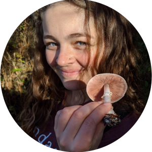

If something bothers you, it's my fault.
Plant-microbe interactions | Pathogens | Bioinformatics
Applied mathematics | Bioinformatics

Tayler Fearn - Neural Net community modeling
Austen Miller - Spatial endophyte assembly
David Parker - Macrophages (MD, Trinity Med)
Jacob Mora - Aquatic endophytes (MD, UofU)
Magnolia Morelli - Fungal genomics (USAF)
Josh Leon - Mangrove metagenomes (PhD, UNC Chapel Hill)
Clayton Rawson - Fungal databases (DO/PhD, Noorda)

Jo Hickman - Mangrove metagenomes (PhD, MIT/WHOI)
Alyssa Tidwell - Post-fire soil fungi (PhD, ORNL)
Matthew Nielsen - Yeast genetics (DDS, UofU)
Reagan Dodge - Soil C cycle (BioFire Defense)
Josh Zushi - Canine microbiomes (Instructure, Inc)
Joseph Jimenez - Hypersaline fungi (DDS, UofTexas)
Sam Smalley - Post-fire fungi (PhD, PNNL)
Bryce Brunetti - Hypersaline fungi (BioFire Defense)
Spencer McGee - Post-fire fungi (Intermtn Health)
Nicholas Long - Oral fungi (DDS UofIowa)
Harrison Haws - Oral fungi (DDS, UofPacific)